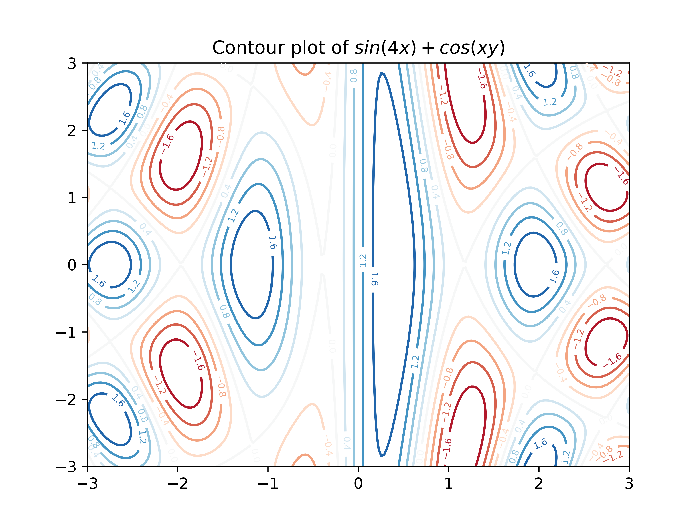

050 Using Matplotlib#
COM6018
Copyright © 2023, 2024 Jon Barker, University of Sheffield. All rights reserved.
In this lab class we are going to get practice with using Matplotlib. We will be using the Matplotlib documentation and the Introducing Matplotlib notebook as a reference.
The lab class is organised as a sequence of exercises. For each one you are provided with a dataset and an image of a plot of the data. Your task is to write code to reproduce the plot as closely as possible. After the lab class the solution code will be released so you can check your answers. The exercises start with simple plots and get progressively more complex.
import matplotlib.pyplot as plt
import numpy as np
import pandas as pd
Plot 1 - Simple line plot#
The first plot is a simple line plot. The plot, shown below, shows worldwide renewable energy consumption from 1989 to 2022. The data for the plot is in file data/renewable_energy.csv. Your task is to write code to reproduce the plot as closely as possible.
Some hints:
You will need to filter the pandas dataframe to select only the data for the ‘World’ region.
You can read the data using pandas
read_csvfunction.The plotting can be done with a series of calls to
plt.plot.Getting the grid lines right is is a bit tricky. You’ll need to to use the ‘plt.grid’ function and
plt.yticksto set the spacing of major and minor tick marks.
Write your code in the cell below. Run the cell to display your plot and make adjustments to the code until it matches the target plot.
# SOLUTION
df = pd.read_csv('data/renewable_energy.csv')
df = df[df['Entity'] == 'World']
plt.plot(df['Year'], df['Other'], label='Other', marker='o', color='blue', linewidth=1, markersize=5)
plt.plot(df['Year'], df['Wind'], label='Wind', marker='*', color='orange', linewidth=1, markersize=5)
plt.plot(df['Year'], df['Hydro'], label='Hydro', marker='^', color='green', linewidth=1, markersize=5)
plt.plot(df['Year'], df['Solar'], label='Solar', marker='v', color='red', linewidth=1, markersize=5)
plt.xlabel('Year')
major_ticks = np.arange(0, 5000, 1000)
minor_ticks = np.arange(0, 5000, 200)
plt.yticks(major_ticks)
plt.yticks(minor_ticks, minor=True)
plt.grid(which='both', axis='both', linestyle='--', linewidth=0.5, color='grey', alpha=0.3)
plt.ylabel('Renewable Energy Consumption (TWh)')
plt.title('Worldwide Renewable Energy Consumption')
plt.legend()
plt.savefig('figures/energy.png', dpi=600)
Plot 1b - Using subplots#
The second plot uses the same data but uses subplots to compare energy consumption for the world, the EU and the UK.
Hints:
Start with the command
plt.figure(figsize=(15, 5))to set the size of the figure.You can use the
plt.subplotcommand to place the subplots on a 1x3 grid.Write a function to generate each subplot, i.e. the function can take a filtered version of the dataframe and a title string as arguments.

# SOLUTION
def make_renewable_plot(df, title):
plt.plot(df['Year'], df['Other'], label='Other', marker='o', color='blue', linewidth=1, markersize=5)
plt.plot(df['Year'], df['Wind'], label='Wind', marker='*', color='orange', linewidth=1, markersize=5)
plt.plot(df['Year'], df['Hydro'], label='Hydro', marker='^', color='green', linewidth=1, markersize=5)
plt.plot(df['Year'], df['Solar'], label='Solar', marker='v', color='red', linewidth=1, markersize=5)
plt.xlabel('Year')
max_value = max(df['Other'].max(), df['Wind'].max(), df['Hydro'].max(), df['Solar'].max())
plt.grid(which='both', axis='both', linestyle='--', linewidth=0.5, color='grey', alpha=0.3)
plt.ylabel('Renewable Energy Consumption (TWh)')
plt.title(title)
plt.legend()
df = pd.read_csv('data/renewable_energy.csv')
plt.figure(figsize=(15, 5))
plt.subplot(1, 3, 1)
make_renewable_plot(df[df['Entity'] == 'World'], 'Worldwide')
plt.subplot(1, 3, 2)
make_renewable_plot(df[df['Entity'] == 'EU'], 'EU')
plt.subplot(1, 3, 3)
make_renewable_plot(df[df['Entity'] == 'UK'], 'UK')
plt.savefig('figures/energy_subplots.png', dpi=600)
Plot 2 - Stackplot and pie charts#
The next plot shows the same worldwide energy consumption data but this time as a ‘stackplot’. There are also two pie charts showing the proportion of energy of each type in 1989 and 2022.
Hints:
The layout can be made using plt.subplot.
You can use the
plt.stackplotfunction to generate the stackplot. Check the matlplot lib documentation for details.The pie charts can be made with
plt.pie. Again, check the documentation for details.You will need to retrieve the first and last value in each data series to use as the data for the pie charts (i.e. 1989 and 2022). You can do this using the
ilocmethod of the dataframe.Note, the first pie chart groups wind, solar and other into ‘all other’.
# SOLUTION
df = pd.read_csv('data/renewable_energy.csv')
df = df[df['Entity'] == 'World']
plt.subplot(2, 1, 1)
plt.stackplot(df['Year'], df['Hydro'], df['Wind'], df['Solar'], df['Other'], labels=['Hydro', 'Wind', 'Solar', 'Other'])
plt.ylabel('Energy Consumption (TWh)')
plt.xlabel('Year')
plt.title('Worldwide Renewable Energy Consumption (TWh)')
plt.legend(loc='upper left')
plt.subplot(2, 2, 3)
plt.pie([df.iloc[0]['Hydro'], df.iloc[0]['Wind'] + df.iloc[0]['Solar'] + df.iloc[0]['Other']], labels=['Hydro', 'All Other'])
plt.title('In 1989', y=-0.1)
plt.subplot(2, 2, 4)
plt.pie([df.iloc[-1]['Hydro'], df.iloc[-1]['Wind'], df.iloc[-1]['Solar'], df.iloc[-1]['Other']], labels=['Hydro', 'Wind', 'Solar', 'Other'])
plt.title('In 2022', y=-0.1)
plt.tight_layout()
plt.savefig('figures/energy_stacked.png', dpi=600)
Plot 3 - Grid of scatter plots#
The next plot illustrates a famous dataset known as the ‘iris’ dataset. The dataset contains measurements of the sepal and petal length and width for three species of iris flower. This dataset was first published in 1936 by the British statistician and biologist Ronald Fisher. The dataset is widely used in machine learning and data science to illustrate classification and clustering algorithms.
The plot shows a grid of scatter plots comparing each pair of measurements. The data is in file data/iris.csv.
This plot is a bit more complex than the previous ones.
Hints:
Write a function that can generate each subplot. The function should take the dataframe and the column names for the x and y axes as arguments.
Use a nested loop to loop over all combinations of x and y axes.
Note, the legend has only been placed on the diagonal subplots where it doesn’t overlap with the data.
You can use the
plt.tight_layout()function as the final command to ensure that the subplot axes titles don’t overlap other subplots.

# SOLUTION
df = pd.read_csv('data/iris.csv')
def plot_scatter(df, x, y):
for species in df['species'].unique():
plt.scatter(df[df['species'] == species][x], df[df['species'] == species][y], label=species, marker='o', s=20, alpha=0.5)
plt.xlabel(x)
plt.ylabel(y)
if x == y:
plt.legend()
features = ['sepal_length', 'sepal_width', 'petal_length', 'petal_width']
plot_no = 0
plt.figure(figsize=(12, 12))
for f1 in features:
for f2 in features:
plot_no += 1
plt.subplot(4, 4, plot_no)
plot_scatter(df, f1, f2)
plt.tight_layout()
plt.savefig('figures/iris_scatter.png', dpi=600)
Plot 4 - Geographic data plot#
The next plot is showing the location and generation capacity of wind farms in the UK. The data is in file data/wind_farms.csv. The plot is basically a scatter plot but the points are shown over a map of the UK. This has been achieved using the cartopy package for plotting geographic data.
The first lines of the solution are as follows
import cartopy.crs as ccrs
import cartopy.feature as cfeature
df = pd.read_csv('data/wind_farms_uk.csv')
fig = plt.figure(figsize=(8, 8))
ax = plt.axes(projection=ccrs.Mercator())
ax.set_extent([-11, 3, 49.3, 60], crs=ccrs.PlateCarree())
You will now need to use the ax.scatter function to plot the wind farm locations.
Hints:
The area of the circles is proportional to squareroot of the wind farm capacity.
You will need to use
ax.scatterwith the parameter ‘transform=ccrs.PlateCarree()’You will need to read the https://scitools.org.uk/cartopy documentation to see how to shade the land and sea.
The legend in the bottom left corner is quite tricky to generate. It can be made by placing invisible ‘dummy’ points on the plot that have labels attached. Try Googling for a solution but don’t worry if you can’t get this bit to work, wait for the solution code to be released.

# SOLUTION
import matplotlib.pyplot as plt
import cartopy.crs as ccrs
import cartopy.feature as cfeature
fig = plt.figure(figsize=(8, 8))
df = pd.read_csv('data/wind_farms_uk.csv')
ax = plt.axes(projection=ccrs.Mercator())
ax.set_extent([-11, 3, 49.3, 60], crs=ccrs.PlateCarree())
ax.coastlines(resolution='10m')
ax.add_feature(cfeature.LAND, zorder=1, edgecolor='k')
ax.add_feature(cfeature.OCEAN, zorder=1, edgecolor='k')
marker_sizes = np.sqrt(df['capacity'].values) * 10
ax.scatter(df['longitude'].values,
df['latitude'].values,
transform=ccrs.PlateCarree(),
s=marker_sizes,
alpha=0.5)
plt.title('Wind Farms in the UK. Area of circle represents capacity.')
for a in [100, 500, 1000]:
plt.scatter([], [], c='#1f77b4', alpha=0.5, s=np.sqrt(a)*10,
label=str(a) + ' MW')
plt.legend(scatterpoints=1, frameon=False, labelspacing=1, loc='lower left')
plt.savefig('figures/wind_farms.png', dpi=600)
/opt/hostedtoolcache/Python/3.11.10/x64/lib/python3.11/site-packages/cartopy/io/__init__.py:241: DownloadWarning: Downloading: https://naturalearth.s3.amazonaws.com/10m_physical/ne_10m_land.zip
warnings.warn(f'Downloading: {url}', DownloadWarning)
/opt/hostedtoolcache/Python/3.11.10/x64/lib/python3.11/site-packages/cartopy/io/__init__.py:241: DownloadWarning: Downloading: https://naturalearth.s3.amazonaws.com/10m_physical/ne_10m_ocean.zip
warnings.warn(f'Downloading: {url}', DownloadWarning)
---------------------------------------------------------------------------
KeyboardInterrupt Traceback (most recent call last)
Cell In[6], line 30
26 plt.scatter([], [], c='#1f77b4', alpha=0.5, s=np.sqrt(a)*10,
27 label=str(a) + ' MW')
28 plt.legend(scatterpoints=1, frameon=False, labelspacing=1, loc='lower left')
---> 30 plt.savefig('figures/wind_farms.png', dpi=600)
File /opt/hostedtoolcache/Python/3.11.10/x64/lib/python3.11/site-packages/matplotlib/pyplot.py:1228, in savefig(*args, **kwargs)
1225 fig = gcf()
1226 # savefig default implementation has no return, so mypy is unhappy
1227 # presumably this is here because subclasses can return?
-> 1228 res = fig.savefig(*args, **kwargs) # type: ignore[func-returns-value]
1229 fig.canvas.draw_idle() # Need this if 'transparent=True', to reset colors.
1230 return res
File /opt/hostedtoolcache/Python/3.11.10/x64/lib/python3.11/site-packages/matplotlib/figure.py:3395, in Figure.savefig(self, fname, transparent, **kwargs)
3393 for ax in self.axes:
3394 _recursively_make_axes_transparent(stack, ax)
-> 3395 self.canvas.print_figure(fname, **kwargs)
File /opt/hostedtoolcache/Python/3.11.10/x64/lib/python3.11/site-packages/matplotlib/backend_bases.py:2204, in FigureCanvasBase.print_figure(self, filename, dpi, facecolor, edgecolor, orientation, format, bbox_inches, pad_inches, bbox_extra_artists, backend, **kwargs)
2200 try:
2201 # _get_renderer may change the figure dpi (as vector formats
2202 # force the figure dpi to 72), so we need to set it again here.
2203 with cbook._setattr_cm(self.figure, dpi=dpi):
-> 2204 result = print_method(
2205 filename,
2206 facecolor=facecolor,
2207 edgecolor=edgecolor,
2208 orientation=orientation,
2209 bbox_inches_restore=_bbox_inches_restore,
2210 **kwargs)
2211 finally:
2212 if bbox_inches and restore_bbox:
File /opt/hostedtoolcache/Python/3.11.10/x64/lib/python3.11/site-packages/matplotlib/backend_bases.py:2054, in FigureCanvasBase._switch_canvas_and_return_print_method.<locals>.<lambda>(*args, **kwargs)
2050 optional_kws = { # Passed by print_figure for other renderers.
2051 "dpi", "facecolor", "edgecolor", "orientation",
2052 "bbox_inches_restore"}
2053 skip = optional_kws - {*inspect.signature(meth).parameters}
-> 2054 print_method = functools.wraps(meth)(lambda *args, **kwargs: meth(
2055 *args, **{k: v for k, v in kwargs.items() if k not in skip}))
2056 else: # Let third-parties do as they see fit.
2057 print_method = meth
File /opt/hostedtoolcache/Python/3.11.10/x64/lib/python3.11/site-packages/matplotlib/backends/backend_agg.py:496, in FigureCanvasAgg.print_png(self, filename_or_obj, metadata, pil_kwargs)
449 def print_png(self, filename_or_obj, *, metadata=None, pil_kwargs=None):
450 """
451 Write the figure to a PNG file.
452
(...)
494 *metadata*, including the default 'Software' key.
495 """
--> 496 self._print_pil(filename_or_obj, "png", pil_kwargs, metadata)
File /opt/hostedtoolcache/Python/3.11.10/x64/lib/python3.11/site-packages/matplotlib/backends/backend_agg.py:444, in FigureCanvasAgg._print_pil(self, filename_or_obj, fmt, pil_kwargs, metadata)
439 def _print_pil(self, filename_or_obj, fmt, pil_kwargs, metadata=None):
440 """
441 Draw the canvas, then save it using `.image.imsave` (to which
442 *pil_kwargs* and *metadata* are forwarded).
443 """
--> 444 FigureCanvasAgg.draw(self)
445 mpl.image.imsave(
446 filename_or_obj, self.buffer_rgba(), format=fmt, origin="upper",
447 dpi=self.figure.dpi, metadata=metadata, pil_kwargs=pil_kwargs)
File /opt/hostedtoolcache/Python/3.11.10/x64/lib/python3.11/site-packages/matplotlib/backends/backend_agg.py:387, in FigureCanvasAgg.draw(self)
384 # Acquire a lock on the shared font cache.
385 with (self.toolbar._wait_cursor_for_draw_cm() if self.toolbar
386 else nullcontext()):
--> 387 self.figure.draw(self.renderer)
388 # A GUI class may be need to update a window using this draw, so
389 # don't forget to call the superclass.
390 super().draw()
File /opt/hostedtoolcache/Python/3.11.10/x64/lib/python3.11/site-packages/matplotlib/artist.py:95, in _finalize_rasterization.<locals>.draw_wrapper(artist, renderer, *args, **kwargs)
93 @wraps(draw)
94 def draw_wrapper(artist, renderer, *args, **kwargs):
---> 95 result = draw(artist, renderer, *args, **kwargs)
96 if renderer._rasterizing:
97 renderer.stop_rasterizing()
File /opt/hostedtoolcache/Python/3.11.10/x64/lib/python3.11/site-packages/matplotlib/artist.py:72, in allow_rasterization.<locals>.draw_wrapper(artist, renderer)
69 if artist.get_agg_filter() is not None:
70 renderer.start_filter()
---> 72 return draw(artist, renderer)
73 finally:
74 if artist.get_agg_filter() is not None:
File /opt/hostedtoolcache/Python/3.11.10/x64/lib/python3.11/site-packages/matplotlib/figure.py:3162, in Figure.draw(self, renderer)
3159 # ValueError can occur when resizing a window.
3161 self.patch.draw(renderer)
-> 3162 mimage._draw_list_compositing_images(
3163 renderer, self, artists, self.suppressComposite)
3165 renderer.close_group('figure')
3166 finally:
File /opt/hostedtoolcache/Python/3.11.10/x64/lib/python3.11/site-packages/matplotlib/image.py:132, in _draw_list_compositing_images(renderer, parent, artists, suppress_composite)
130 if not_composite or not has_images:
131 for a in artists:
--> 132 a.draw(renderer)
133 else:
134 # Composite any adjacent images together
135 image_group = []
File /opt/hostedtoolcache/Python/3.11.10/x64/lib/python3.11/site-packages/matplotlib/artist.py:72, in allow_rasterization.<locals>.draw_wrapper(artist, renderer)
69 if artist.get_agg_filter() is not None:
70 renderer.start_filter()
---> 72 return draw(artist, renderer)
73 finally:
74 if artist.get_agg_filter() is not None:
File /opt/hostedtoolcache/Python/3.11.10/x64/lib/python3.11/site-packages/cartopy/mpl/geoaxes.py:524, in GeoAxes.draw(self, renderer, **kwargs)
519 self.imshow(img, extent=extent, origin=origin,
520 transform=factory.crs, *factory_args[1:],
521 **factory_kwargs)
522 self._done_img_factory = True
--> 524 return super().draw(renderer=renderer, **kwargs)
File /opt/hostedtoolcache/Python/3.11.10/x64/lib/python3.11/site-packages/matplotlib/artist.py:72, in allow_rasterization.<locals>.draw_wrapper(artist, renderer)
69 if artist.get_agg_filter() is not None:
70 renderer.start_filter()
---> 72 return draw(artist, renderer)
73 finally:
74 if artist.get_agg_filter() is not None:
File /opt/hostedtoolcache/Python/3.11.10/x64/lib/python3.11/site-packages/matplotlib/axes/_base.py:3137, in _AxesBase.draw(self, renderer)
3134 if artists_rasterized:
3135 _draw_rasterized(self.figure, artists_rasterized, renderer)
-> 3137 mimage._draw_list_compositing_images(
3138 renderer, self, artists, self.figure.suppressComposite)
3140 renderer.close_group('axes')
3141 self.stale = False
File /opt/hostedtoolcache/Python/3.11.10/x64/lib/python3.11/site-packages/matplotlib/image.py:132, in _draw_list_compositing_images(renderer, parent, artists, suppress_composite)
130 if not_composite or not has_images:
131 for a in artists:
--> 132 a.draw(renderer)
133 else:
134 # Composite any adjacent images together
135 image_group = []
File /opt/hostedtoolcache/Python/3.11.10/x64/lib/python3.11/site-packages/matplotlib/artist.py:72, in allow_rasterization.<locals>.draw_wrapper(artist, renderer)
69 if artist.get_agg_filter() is not None:
70 renderer.start_filter()
---> 72 return draw(artist, renderer)
73 finally:
74 if artist.get_agg_filter() is not None:
File /opt/hostedtoolcache/Python/3.11.10/x64/lib/python3.11/site-packages/cartopy/mpl/feature_artist.py:215, in FeatureArtist.draw(self, renderer)
213 if geom_path is None:
214 if ax.projection != feature_crs:
--> 215 projected_geom = ax.projection.project_geometry(
216 geom, feature_crs)
217 else:
218 projected_geom = geom
File /opt/hostedtoolcache/Python/3.11.10/x64/lib/python3.11/site-packages/cartopy/crs.py:827, in Projection.project_geometry(self, geometry, src_crs)
825 if not method_name:
826 raise ValueError(f'Unsupported geometry type {geom_type!r}')
--> 827 return getattr(self, method_name)(geometry, src_crs)
File /opt/hostedtoolcache/Python/3.11.10/x64/lib/python3.11/site-packages/cartopy/crs.py:937, in Projection._project_multipolygon(self, geometry, src_crs)
935 geoms = []
936 for geom in geometry.geoms:
--> 937 r = self._project_polygon(geom, src_crs)
938 if r:
939 geoms.extend(r.geoms)
File /opt/hostedtoolcache/Python/3.11.10/x64/lib/python3.11/site-packages/cartopy/crs.py:960, in Projection._project_polygon(self, polygon, src_crs)
958 multi_lines = []
959 for src_ring in [polygon.exterior] + list(polygon.interiors):
--> 960 p_rings, p_mline = self._project_linear_ring(src_ring, src_crs)
961 if p_rings:
962 rings.extend(p_rings)
File /opt/hostedtoolcache/Python/3.11.10/x64/lib/python3.11/site-packages/cartopy/crs.py:846, in Projection._project_linear_ring(self, linear_ring, src_crs)
841 debug = False
842 # 1) Resolve the initial lines into projected segments
843 # 1abc
844 # def23ghi
845 # jkl41
--> 846 multi_line_string = cartopy.trace.project_linear(linear_ring,
847 src_crs, self)
849 # Threshold for whether a point is close enough to be the same
850 # point as another.
851 threshold = max(np.abs(self.x_limits + self.y_limits)) * 1e-5
File lib/cartopy/trace.pyx:591, in cartopy.trace.project_linear()
File lib/cartopy/trace.pyx:482, in cartopy.trace._project_segment()
File lib/cartopy/trace.pyx:413, in cartopy.trace.bisect()
File lib/cartopy/trace.pyx:376, in cartopy.trace.straightAndDomain()
File /opt/hostedtoolcache/Python/3.11.10/x64/lib/python3.11/site-packages/shapely/prepared.py:45, in PreparedGeometry.covers(self, other)
43 def covers(self, other):
44 """Returns True if the geometry covers the other, else False"""
---> 45 return self.context.covers(other)
File /opt/hostedtoolcache/Python/3.11.10/x64/lib/python3.11/site-packages/shapely/geometry/base.py:667, in BaseGeometry.covers(self, other)
665 def covers(self, other):
666 """Returns True if the geometry covers the other, else False"""
--> 667 return _maybe_unpack(shapely.covers(self, other))
File /opt/hostedtoolcache/Python/3.11.10/x64/lib/python3.11/site-packages/shapely/decorators.py:77, in multithreading_enabled.<locals>.wrapped(*args, **kwargs)
75 for arr in array_args:
76 arr.flags.writeable = False
---> 77 return func(*args, **kwargs)
78 finally:
79 for arr, old_flag in zip(array_args, old_flags):
File /opt/hostedtoolcache/Python/3.11.10/x64/lib/python3.11/site-packages/shapely/predicates.py:671, in covers(a, b, **kwargs)
626 @multithreading_enabled
627 def covers(a, b, **kwargs):
628 """Returns True if no point in geometry B is outside geometry A.
629
630 Parameters
(...)
669 False
670 """
--> 671 return lib.covers(a, b, **kwargs)
KeyboardInterrupt:
Plot 5 - Contour plot of function#
The last example is a contour plot of the function is \(f(x,y) = sin(4x) + cos(xy)\)
This looks complicated but can actually be made with just a few lines of code. If you are unsure on how to proceed then check the contour plot example in the course notes.
Hints:
Use
np.meshgridto generate the x and y coordinates.Use
plt.contourto generate the contour plot.Use
plt.clabelto add the contour labels.The plot is using the colourmap called ‘RdBu’ which use red to represent low values and blue to represent high values.
Write a Python function called ‘f’ to compute the function values for each x and y coordinate. This will make the code easier to read. This function should take a pair of numpy arrays to represent the x and y coordinates of all the points that need to be computed and return the function values as a numpy array. (The x and y arrays can be generated using
np.meshgrid.)
You can easily change the function to plot by changing the definition of the function ‘f’. By using sines and cosines of different sums, products and powers of x and y you can generate a wide range of interesting patterns.
# SOLUTION
def f(x, y):
return np.sin(x*4) + np.cos(y*x)
xs, ys = np.meshgrid(np.linspace(-3.0, 3.0, 200), np.linspace(-3.0, 3.0, 200))
cs = plt.contour(xs, ys, f(xs, ys), 10, cmap='RdBu')
plt.clabel(cs, cs.levels, inline=True, fontsize=6)
plt.title('Contour plot of $sin(4x) + cos(xy)$')
plt.savefig('figures/contours.png', dpi=600)